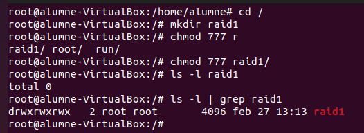
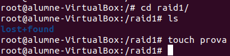

Raids
Documentació RAID
Introducció als sistemes RAID
Els sistemes RAID (Redundant Array of Independent Disks) són mecanismes d'emmagatzematge que combinen diversos discs físics per proporcionar millores en rendiment, seguretat de les dades o ambdues coses, depenent del nivell RAID utilitzat.
Actualment, hi ha altres tecnologies que, tot i no ser RAID en sentit estricte, ofereixen funcionalitats similars. Un exemple és CEPH, un sistema d'emmagatzematge distribuït que proporciona alta redundància, auto balanceig i gran escalabilitat.
Tipus de RAID
| Nivell RAID | Descripció | Avantatges | Desavantatges |
|---|---|---|---|
| RAID 0 | Distribueix les dades sense cap redundància | Alt rendiment | No ofereix tolerància a fallades |
| RAID 1 | Clona les dades en dos discs (mirall) | Alta protecció de dades | Només s'aprofita el 50% de la capacitat |
| RAID 5 | Distribueix les dades amb paritat | Bona relació entre rendiment i seguretat | Necessita un mínim de 3 discs, rendiment d'escriptura inferior |
| RAID 6 | Igual que RAID 5, però amb doble paritat | Pot tolerar la fallada de fins a 2 discs | Més discs necessaris, rendiment d'escriptura més baix |
| RAID 10 | Combinació de RAID 1 i RAID 0 | Alt rendiment i seguretat | Elevat cost per necessitat de més discs |
ZFS: Un sistema de fitxers amb funcionalitats RAID
ZFS és un sistema de fitxers combinat amb un gestor de volums, desenvolupat originalment per Sun Microsystems. Les seves principals característiques inclouen:
- Integritat de dades: Fa servir sumes de verificació i capacitat d'auto reparació.
- Snapshots i clonació: Permet la recuperació i la gestió eficient de dades.
- Compressió i deduplicació: Optimitza l'assignació d'espai.
- Pooled storage: Facilita una gestió flexible dels discos.
ZFS implementa esquemes de redundància sota el nom RAID-Z, amb millores significatives respecte als RAID tradicionals quant a seguretat i gestió.
CEPH: Solució d'emmagatzematge distribuït
CEPH és una tecnologia d'emmagatzematge distribuït que supera els conceptes clàssics de RAID. Les seves característiques clau inclouen:
- Redundància avançada: Fa servir replicació i erasure coding per protegir dades.
- Auto balanceig: Redistribueix automàticament la càrrega per optimitzar el rendiment.
- Escalabilitat: Pot ampliar-se afegint nous nodes sense interrupcions.
CEPH opera de manera diferent als RAID tradicionals, però persegueix els mateixos objectius de protecció i eficiència de dades.
Configuració i aspectes a tenir en compte
- Selecció dels discs: Es recomana utilitzar discs de característiques similars per garantir estabilitat.
- Planificació: Abans de configurar un RAID, cal definir quins seran els requisits de redundància i rendiment.
- Automatització: Una configuració adequada inclou l'automatització del muntatge dels discs per a un accés eficient a les dades.
Comparativa RAID, CEPH i ZFS
| Característica | RAID | CEPH | ZFS |
|---|---|---|---|
| Tipus | Agrupació de discs | Emmagatzematge distribuït | Sistema de fitxers amb gestor de volums |
| Implementació | Hardware o software | Basat en programari, distribuït | Integrat amb el sistema de fitxers |
| Redundància | Mirroring, paritat | Replicació, erasure coding | RAID-Z (copy-on-write) |
| Escalabilitat | Limitada | Molt alta | Escalabilitat moderada |
| Gestió | Manual | Auto administrat | Integració de snapshots i altres funcions avançades |
| Funcions | Rendiment i redundància | Alta disponibilitat | Integritat de dades, compressió, deduplicació |
Aquesta guia proporciona una visió general dels sistemes RAID, ZFS i CEPH, destacant les seves funcionalitats i diferències per facilitar la selecció d'una solució d'emmagatzematge adequada a cada necessitat.
Exemple Configuració RAID 1
Primer instalem mdadm que es una eina de creacio i administracio de RAIDS
Configurem els dos discos cadascun com a particio completa i sobre amb "t" canviem el tipus a "fd" que es per a RAIDS (en la imatge nomes apareix el disc "SDC")
Ara crearem dins de l'arrel una carpeta per al RAID1 amb per permisos 777

Utilitzare la seguent comanda per a configurar el RAID, explicacio comanda:
-
mdadm→ Eina per gestionar RAID per programari a Linux. -
--create /dev/md0→ Crea un nou dispositiu RAID anomenat/dev/md0. -
--level=1→ Especifica que es crearà un RAID 1 (mirroring), on les dades es replicaran entre els dispositius. -
--raid-devices=2→ Defineix que el RAID tindrà 2 dispositius. -
/dev/sdb1 /dev/sdc1→ Són les particions que formen part del RAID.
Comprovem la configuracio de la RAID
Fem un escaneig i el guardem dins del fitxer de configuracio de raids
Revisem la configuracio i afegim els discos incloent la particio com a "DEVICES"
Afegim un format a la particio de la RAID
afegim al fstab per a que es muntigue automaticament la RAID al inciar el equip
la montem manualment
actualitza les imatges de l'initramfs
entrem a al directori i afegim un fitxer de prova

revisem
convertim el disc a faulty
eliminem el disc sdb1
comprovem que els fitxers encara estan dins, creem una carpeta nova i tornem a afegir el disc sdb1
fem un ls per veure que estan tots els fitxers
ara eliminem fisicament el primer disc
comprovem que els dades estan guardades al altre disc
i finalment intentem escriure algo dins de la raid
Exemple Configuració RAID 5
Què és un RAID 5?
RAID 5 és un sistema que combina velocitat i seguretat mitjançant la distribució de dades i la inclusió d'informació de paritat. Això permet que, en cas de fallada d’un dels discos, les dades es puguin reconstruir sense pèrdua. Per a aquesta configuració, s’utilitzen almenys tres discos, tot i que en aquest exemple en farem servir quatre.
Passos per configurar un RAID 5
1. Connexió i verificació dels discos
-
Assegura’t que els quatre discos estan connectats correctament al sistema.
-
Comprova que el sistema els reconeix executant:
bash lsblk
2. Creació de particions
Cada disc ha de tenir una partició RAID. Per fer-ho:
-
Utilitza l’eina
fdiskper crear les particions. -
Defineix el tipus de partició amb
ti estableix el codifdper marcar-les com a "Linux RAID autodetectable".
3. Creació del RAID 5
sudo mdadm --create /dev/md0 --level=5 --raid-devices=4 /dev/sdb1 /dev/sdc1 /dev/sdd1 /dev/sde1
4. Verificació del RAID
sudo mdadm --detail /dev/md0
5. Formatació del RAID
sudo mkfs.ext4 /dev/md0
6. Muntatge del RAID
sudo mkdir /mnt/raid5
sudo mount /dev/md0 /mnt/raid5
7. Configuració persistent del RAID
sudo mdadm --detail --scan > /etc/mdadm/mdadm.conf
8. Configuració del muntatge automàtic (fstab)
Afegeix aquesta línia a /etc/fstab:
/dev/md0 /mnt/raid5 ext4 defaults 0 0
9. Actualització del sistema d'arrencada
sudo update-initramfs -u -k all
Proves del RAID 5 i recuperació després d'una fallada
Creació de fitxers de prova
touch /mnt/RAID5/prova1 /mnt/RAID5/prova2
Simulació de fallada d’un disc
- eliminem el disc 1 "sdb" per a fer vore que ha fallat un disc de la RAID
Reactivació del RAID
sudo mdadm --stop /dev/md0
sudo mdadm -As /dev/md0
sudo mount -a
Substitució del disc fallat
Quan es rep un nou disc:
-
Crea una partició RAID com hem fet abans.
-
Afegeix-lo de nou al RAID:
bash
sudo mdadm --add /dev/md0 /dev/sdd1
Comprovació final
sudo mdadm --detail /dev/md0